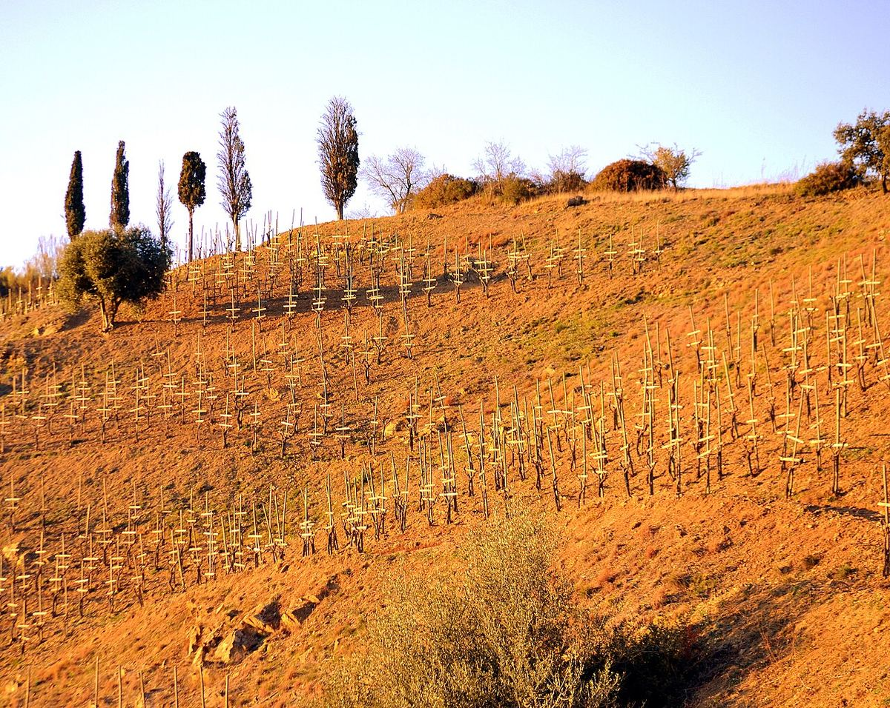

RED
Priorat, in the province of Tarragona, is one of Spain's two Qualified Designations of Origin, alongside Rioja. Its reds from Grenache and Carignan, grown on slopes of slate known as llicorella, are noted for their concentration and mineral character.

The name Priorat comes from the priory of the Carthusian monastery of Scala Dei, founded at the end of the twelfth century at the foot of the Montsant range. The Carthusian monks promoted vine growing in the area for centuries. At the end of the nineteenth century phylloxera devastated the vineyards and caused heavy emigration, and for much of the twentieth century production was limited to bulk wine, largely made by cooperatives. In the late 1980s a small group of winemakers, including René Barbier, Álvaro Palacios, Carles Pastrana, Josep Lluís Pérez and Daphne Glorian, settled around Gratallops and began making highly concentrated reds that brought the region international fame. In 2000 the Government of Catalonia granted it the status of Qualified Designation of Origin (DOQ in Catalan), which was recognised at national level in 2009.
Priorat is a mountainous area in inland Tarragona, sheltered to the north by the Montsant range. The vineyards are planted on slopes that are often very steep, either on terraces or directly on the incline, with widely varying aspects and altitudes. The climate is Mediterranean with continental features: hot, dry summers, cool winters, little rain and a marked difference between day and night temperatures.
The most characteristic soil is llicorella, a dark slate that breaks into thin plates and contains particles of mica that glitter in the sun. It is poor in organic matter, which forces the roots to dig deep in search of water and greatly limits yields.
The traditional varieties are Grenache and Carignan, often from old bush vines. Since the late twentieth century Cabernet Sauvignon, Merlot and Syrah have also been grown, mainly for blending. Among the whites, White Grenache and Macabeo stand out. Priorat reds are known for their deep colour, ripe fruit, structure and a character often described as mineral. Whites, a few rosés and, traditionally, rancio and sweet wines are also made.
Priorat has developed a classification based on origin. Vins de vila come from one of the twelve recognised zones, which correspond to villages or areas such as Gratallops, Porrera, Torroja del Priorat, Bellmunt del Priorat, Poboleda and Escaladei. Above them are vins de paratge, from specific named sites, and the categories of classified vineyard and grand classified vineyard, reserved for plots with distinctive characteristics.